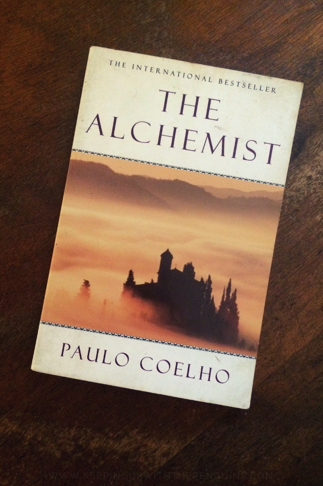

Plot

The Alchemist follows the journey of an Andalusian shepherd boy named Santiago. Believing a recurring dream to be prophetic, he asks a Gypsy fortune teller in the nearby town about its meaning. The woman interprets the dream as a prophecy telling the boy that he will discover a treasure at the Egyptian pyramids.
Early into his journey, he meets an old king named Melchizedek, or the king of Salem, who tells him to sell his sheep, so as to travel to Egypt, and introduces the idea of a Personal Legend. Your Personal Legend "is what you have always wanted to accomplish. Everyone, when they are young, knows what their Personal Legend is.
Early in his arrival to Africa, a man who claims to be able to take Santiago to the pyramids instead robs him of what money he had made from selling his sheep. Santiago then embarks on a long path of working for a crystal merchant so as to make enough money to fulfill his personal legend and go to the pyramids.
Along the way, the boy meets an Englishman who has come in search of an alchemist and continues his travels with his new companion. When they reach an oasis, Santiago meets and falls in love with an Arabian girl named Fatima, to whom he proposes marriage. She promises to do so only after he completes his journey. Frustrated at first, he later learns that true love will not stop nor must one sacrifice to it one's personal destiny, since to do so robs it of truth.
The boy then encounters a wise alchemist who also teaches him to realize his true self. Together, they risk a journey through the territory of warring tribes, where the boy is forced to demonstrate his oneness with "the soul of the world" by turning himself into a simoom before he is allowed to proceed. When he begins digging within sight of the pyramids, he is robbed yet again, but accidentally learns from the leader of the thieves that the treasure he sought all along was in the ruined church where he had his original dream..
Total Books in the Series:

There is only one book. Coelho wrote The Alchemist in only two weeks in 1987. He explained that he was able to write at this pace because the story was "already written in his soul."